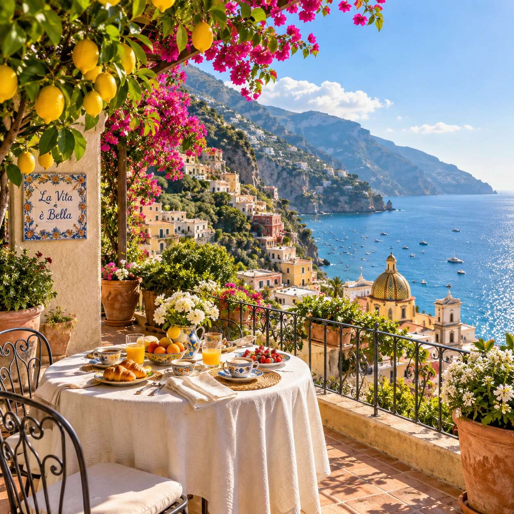
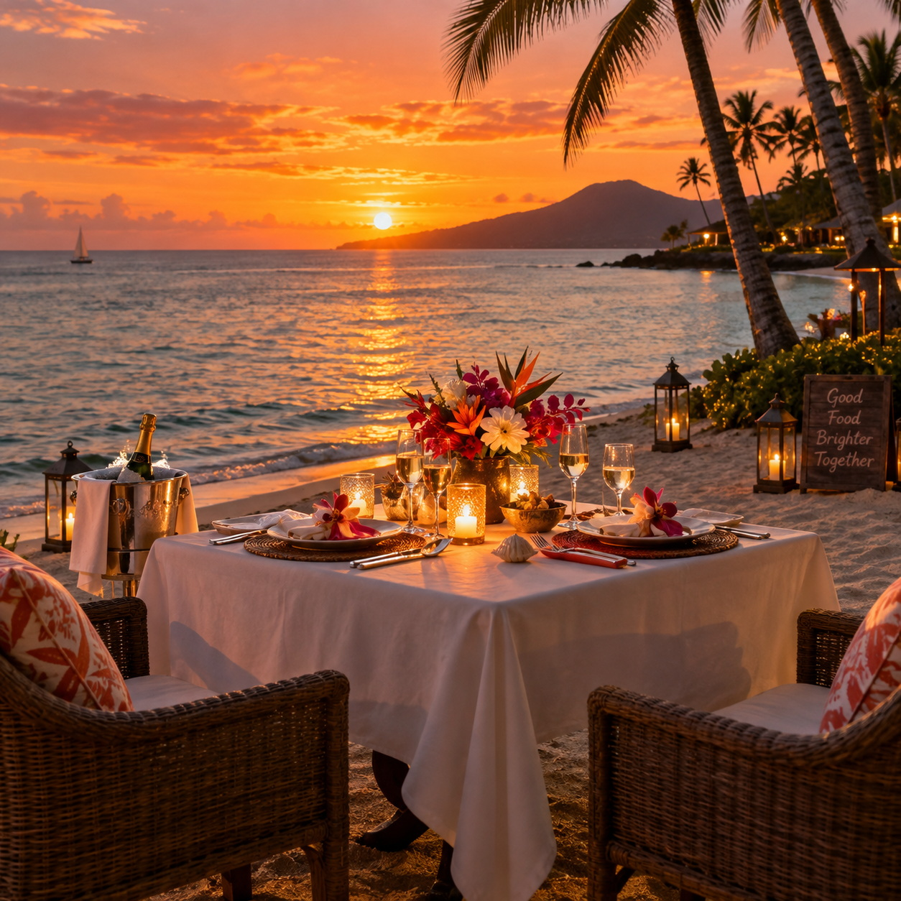
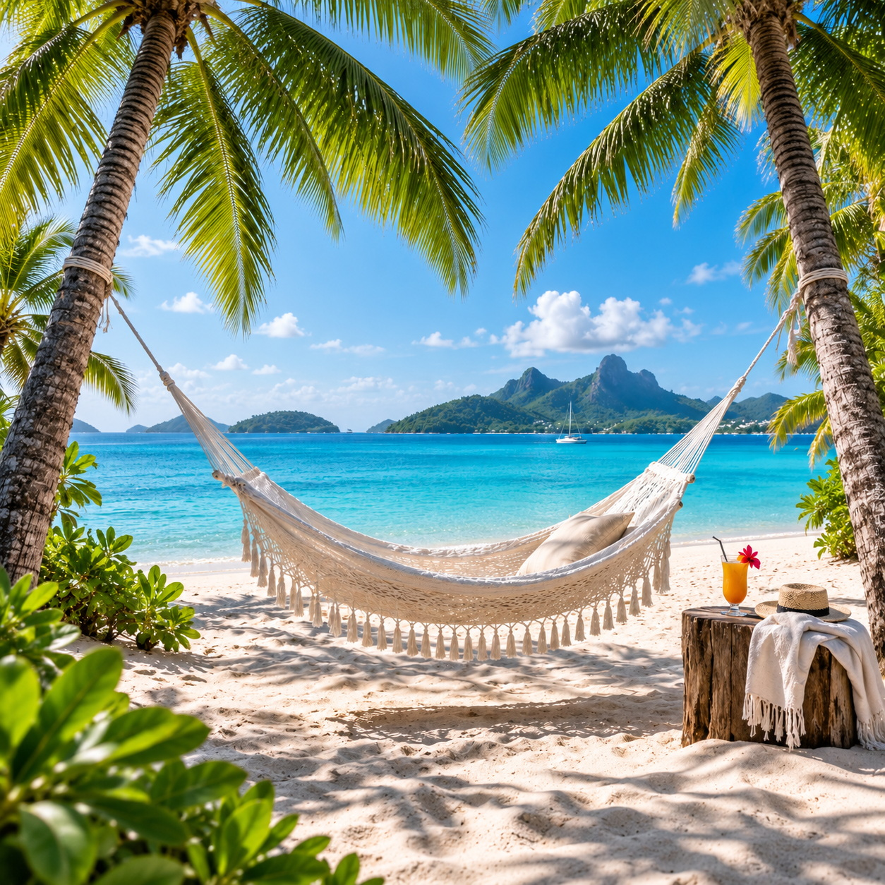
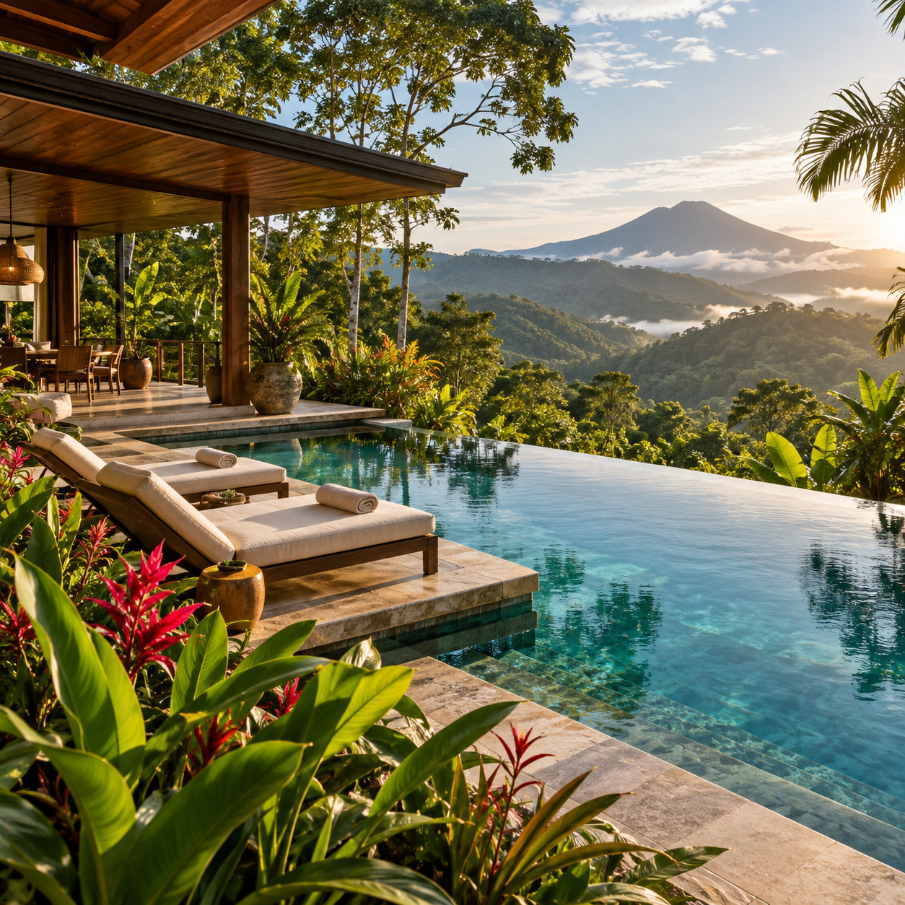

Discover Your Perfect Vacation Destination
In less than 10 minutes, we’ll guide you through every important detail.




Vacation Destination Discovery Tool
Find destinations that feel made for you.
Define your budget, timing, interests, comfort needs, and travel style.
Your selections generate a detailed prompt for your favorite AI chatbot.
Select one or more choices, leave blank, and use the optional write-in space whenever you wish.
Paste this into ChatGPT, Gemini, Claude, or another AI chatbot to receive your personalized destination recommendations.